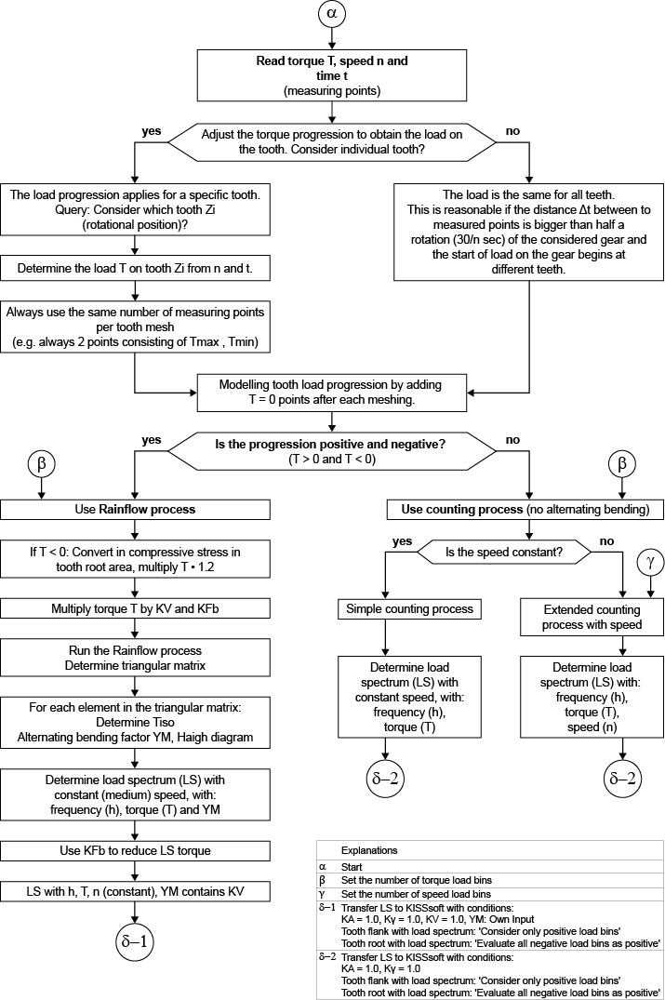

|
|
|


扭矩测量
使用实测扭矩曲线为齿轮定义载荷谱的计算选项使您能够从实测扭矩曲线生成载荷谱。如果所有扭矩测量点均为正值，则使用扩展的简单计数（simple count）法。在包含正负值的更复杂扭矩曲线中，使用雨流（Rainflow）法，并确定一个考虑交变扭矩、具有交变弯曲系数 YM 的载荷谱。
此计算选项适用于所有可以进行载荷谱计算的齿轮计算。
也可以为滚动轴承和轴生成载荷谱。滚动轴承使用简单计数法，轴使用雨流法。

然后根据实测扭矩曲线确定可用于 KISSsoft 的载荷谱。在轮齿上使用此方法时，您必须注意，当齿轮旋转时，一个轮齿在啮合过程中承受载荷，之后载荷再次移除。因此，通过在每个测量点（扭矩、转速、时间）之后添加一个扭矩为零的点来改变轮齿上的扭矩曲线。
要开始计算，请单击标题栏中位于上方的选择列表，或转到选项卡并单击载荷谱表格下方的 Sizing 按钮。
Torque measurement
The calculation option for defining a load spectrum for gears using the measured torque curve enables you to generate a load spectrum from a measured torque curve. If all the torque measuring points are positive, an extended "simple count" method is used. In more complex torque curves that have positive and negative values, the Rainflow method is used and a load spectrum with alternating bending factors YM that takes alternating torque into account is determined.
This calculation option is available for all gear calculations that can perform calculations with load spectra.
A load spectrum can also be generated for rolling bearings and shafts. The simple count method is used for rolling bearings and the Rainflow method is used for shafts.
A load spectrum that can be used with KISSsoft is then determined from a measured torque curve. When using this method on a tooth, you must be aware that one tooth is subjected to load during meshing when the gear is rotated and then the load is removed again. The torque curve on the tooth is therefore changed by adding a point with torque zero after every measuring point (torque, speed, time).
To start the calculation, click on the selection list below in the title bar above or go to the tab and click the Sizing button below the Load spectrum table.